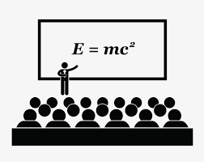

Pivot¶
Formato Wide y Formato Long¶
Dentro del mundo de los dataframe (o datos tabulares) existen dos formas de presentar la naturaleza de los datos: formato wide y formato long.
Por ejemplo, el conjunto de datos Zoo Data Set presenta las características de diversos animales, de los cuales presentamos las primeras 5 columnas.
animal_name |
hair |
feathers |
eggs |
milk |
|---|---|---|---|---|
antelope |
1 |
0 |
0 |
1 |
bear |
1 |
0 |
0 |
1 |
buffalo |
1 |
0 |
0 |
1 |
catfish |
0 |
0 |
1 |
0 |
La tabla así presentada se encuentra en wide format, es decir, donde los valores se extienden a través de las columnas.
Sería posible representar el mismo contenido anterior en long format, es decir, donde los mismos valores se indicaran a través de las filas:
animal_name |
characteristic |
value |
|---|---|---|
antelope |
hair |
1 |
antelope |
feathers |
0 |
antelope |
eggs |
0 |
antelope |
milk |
1 |
… |
… |
… |
catfish |
hair |
0 |
catfish |
feathers |
0 |
catfish |
eggs |
1 |
catfish |
milk |
0 |
En python existen maneras de pasar del formato wide al formato long y viceversa.
Pivotear y despivotear tablas¶
Pivot¶
El pivoteo de una tabla corresponde al paso de una tabla desde el formato long al formato wide. Típicamente esto se realiza para poder comparar los valores que se obtienen para algún registro en particular, o para utilizar algunas herramientas de visualización básica que requieren dicho formato.
Para ejemplificar estos resultados, ocupemos el conjunto de datos terremotos.csv, con contiene los registros de terremotos de distintos paises desde el año 2000 al 2011.
import pandas as pd
import numpy as np
import os
# formato long
df = pd.read_csv(os.path.join("data","terremotos.csv"), sep=",")
df.head()
| Año | Pais | Magnitud | |
|---|---|---|---|
| 0 | 2011 | Turkey | 7.1 |
| 1 | 2011 | India | 6.9 |
| 2 | 2011 | Japan | 7.1 |
| 3 | 2011 | Burma | 6.8 |
| 4 | 2011 | Japan | 9.0 |
Por ejemplo, se quiere saber el terremoto de mayor magnitud a nivel de país año. Tenemos dos formas de mostrar la información.
# formato long
df.groupby(['Pais','Año']).max()
| Magnitud | ||
|---|---|---|
| Pais | Año | |
| Afghanistan | 2000 | 6.3 |
| 2001 | 5.0 | |
| 2002 | 5.8 | |
| 2003 | 5.8 | |
| 2004 | 6.5 | |
| ... | ... | ... |
| Turkmenistan | 2000 | 7.0 |
| United States | 2001 | 6.8 |
| 2003 | 6.6 | |
| Venezuela | 2006 | 5.5 |
| Vietnam | 2005 | 5.3 |
154 rows × 1 columns
# formato wide
df.pivot_table(index="Pais", columns="Año", values="Magnitud", fill_value='', aggfunc=pd.np.max)
<ipython-input-4-733c3b7cbafb>:2: FutureWarning: The pandas.np module is deprecated and will be removed from pandas in a future version. Import numpy directly instead
df.pivot_table(index="Pais", columns="Año", values="Magnitud", fill_value='', aggfunc=pd.np.max)
| Año | 2000 | 2001 | 2002 | 2003 | 2004 | 2005 | 2006 | 2007 | 2008 | 2009 | 2010 | 2011 |
|---|---|---|---|---|---|---|---|---|---|---|---|---|
| Pais | ||||||||||||
| Afghanistan | 6.3 | 5.0 | 5.8 | 5.8 | 6.5 | |||||||
| Afghanistan | 7.3 | 6.5 | ||||||||||
| Algeria | 5.7 | 5.7 | 5.2 | 5.5 | ||||||||
| Algeria | 6.8 | |||||||||||
| Argentina | 7.2 | 6.1 | ||||||||||
| ... | ... | ... | ... | ... | ... | ... | ... | ... | ... | ... | ... | ... |
| Turkey | 6.3 | 6.1 | 7.1 | |||||||||
| Turkmenistan | 7.0 | |||||||||||
| United States | 6.8 | 6.6 | ||||||||||
| Venezuela | 5.5 | |||||||||||
| Vietnam | 5.3 |
72 rows × 12 columns
Despivotear un tabla¶
El despivotear una tabla corresponde al paso de una tabla desde el formato wide al formato long.
Se reconocen dos situaciones:
El valor indicado para la columna es único, y sólo se requiere definir correctamente las columnas.
El valor indicado por la columna no es único o requiere un procesamiento adicional, y se requiere una iteración más profunda.
Para ejemplificar esto, crearemos un conjunto de datos con los horarios de los ramos que se tiene que dictar en un determinado día, hora y lugar.
{kind=link}
a) El valor indicado para la columna es único
columns = ["sala","dia","08:00","09:00","10:00"]
data = [
["C201","Lu", "mat1","mat1", ""],
["C201","Ma", "","",""],
["C202","Lu", "","",""],
["C202","Ma", "mat1","mat1", ""],
["C203","Lu", "fis1","fis1","fis1"],
["C203","Ma", "fis1","fis1","fis1"],
]
df = pd.DataFrame(data=data, columns=columns)
df
| sala | dia | 08:00 | 09:00 | 10:00 | |
|---|---|---|---|---|---|
| 0 | C201 | Lu | mat1 | mat1 | |
| 1 | C201 | Ma | |||
| 2 | C202 | Lu | |||
| 3 | C202 | Ma | mat1 | mat1 | |
| 4 | C203 | Lu | fis1 | fis1 | fis1 |
| 5 | C203 | Ma | fis1 | fis1 | fis1 |
# Despivotear incorrectamente la tabla
df.melt(id_vars=["sala"], var_name="hora", value_name="curso")
| sala | hora | curso | |
|---|---|---|---|
| 0 | C201 | dia | Lu |
| 1 | C201 | dia | Ma |
| 2 | C202 | dia | Lu |
| 3 | C202 | dia | Ma |
| 4 | C203 | dia | Lu |
| 5 | C203 | dia | Ma |
| 6 | C201 | 08:00 | mat1 |
| 7 | C201 | 08:00 | |
| 8 | C202 | 08:00 | |
| 9 | C202 | 08:00 | mat1 |
| 10 | C203 | 08:00 | fis1 |
| 11 | C203 | 08:00 | fis1 |
| 12 | C201 | 09:00 | mat1 |
| 13 | C201 | 09:00 | |
| 14 | C202 | 09:00 | |
| 15 | C202 | 09:00 | mat1 |
| 16 | C203 | 09:00 | fis1 |
| 17 | C203 | 09:00 | fis1 |
| 18 | C201 | 10:00 | |
| 19 | C201 | 10:00 | |
| 20 | C202 | 10:00 | |
| 21 | C202 | 10:00 | |
| 22 | C203 | 10:00 | fis1 |
| 23 | C203 | 10:00 | fis1 |
# Despivotear correctamente la tabla
df_melt = df.melt(id_vars=["sala", "dia"], var_name="hora", value_name="curso")
df_melt[df_melt.curso!=""].sort_values(["sala","dia","hora"])
| sala | dia | hora | curso | |
|---|---|---|---|---|
| 0 | C201 | Lu | 08:00 | mat1 |
| 6 | C201 | Lu | 09:00 | mat1 |
| 3 | C202 | Ma | 08:00 | mat1 |
| 9 | C202 | Ma | 09:00 | mat1 |
| 4 | C203 | Lu | 08:00 | fis1 |
| 10 | C203 | Lu | 09:00 | fis1 |
| 16 | C203 | Lu | 10:00 | fis1 |
| 5 | C203 | Ma | 08:00 | fis1 |
| 11 | C203 | Ma | 09:00 | fis1 |
| 17 | C203 | Ma | 10:00 | fis1 |
b) Relaciones no únicas
columns = ["sala","curso","Lu","Ma","hora"]
data = [
["C201","mat1","X","","8:00-10:00"],
["C202","mat1","","X","8:00-10:00"],
["C203","fis1","X","X","8:00-11:00"],
]
df = pd.DataFrame(data=data, columns=columns)
df
| sala | curso | Lu | Ma | hora | |
|---|---|---|---|---|---|
| 0 | C201 | mat1 | X | 8:00-10:00 | |
| 1 | C202 | mat1 | X | 8:00-10:00 | |
| 2 | C203 | fis1 | X | X | 8:00-11:00 |
Métodos¶
método 01: Despivotear manualmente y generar un nuevo dataframe
Ventajas: Si se puede es una solución directa y rápida.
Desventaja: requiere programación explícita de la tarea, no es reutilizable.
# Obtener el día lunes
df_Lu = df.loc[df.Lu=="X", ["sala","curso","hora"]]
df_Lu["dia"] = "Lu"
df_Lu
| sala | curso | hora | dia | |
|---|---|---|---|---|
| 0 | C201 | mat1 | 8:00-10:00 | Lu |
| 2 | C203 | fis1 | 8:00-11:00 | Lu |
# Obtener el día martes
df_Ma = df.loc[df.Ma=="X", ["sala","curso","hora"]]
df_Ma["dia"] = "Ma"
df_Ma
| sala | curso | hora | dia | |
|---|---|---|---|---|
| 1 | C202 | mat1 | 8:00-10:00 | Ma |
| 2 | C203 | fis1 | 8:00-11:00 | Ma |
# Juntar
pd.concat([df_Lu,df_Ma])
| sala | curso | hora | dia | |
|---|---|---|---|---|
| 0 | C201 | mat1 | 8:00-10:00 | Lu |
| 2 | C203 | fis1 | 8:00-11:00 | Lu |
| 1 | C202 | mat1 | 8:00-10:00 | Ma |
| 2 | C203 | fis1 | 8:00-11:00 | Ma |
método 02: Iterar sobre las filas y generar contenido para un nuevo dataframe
Ventajas: En general, fácil de codificar.
Desventaja: puede ser lento, es ineficiente.
my_columns = ["sala","curso","dia","hora"]
my_data = []
for i, df_row in df.iterrows():
# Procesar cada fila
if df_row.Lu=="X":
my_row = [df_row.sala, df_row.curso, "Lu", df_row.hora]
my_data.append(my_row)
if df_row.Ma=="X":
my_row = [df_row.sala, df_row.curso, "Ma", df_row.hora]
my_data.append(my_row)
new_df = pd.DataFrame(data=my_data, columns=my_columns)
new_df
| sala | curso | dia | hora | |
|---|---|---|---|---|
| 0 | C201 | mat1 | Lu | 8:00-10:00 |
| 1 | C202 | mat1 | Ma | 8:00-10:00 |
| 2 | C203 | fis1 | Lu | 8:00-11:00 |
| 3 | C203 | fis1 | Ma | 8:00-11:00 |